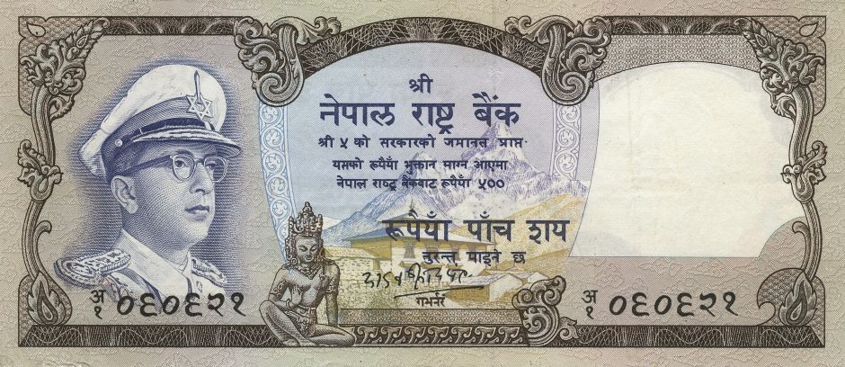

Yadav Prasad Pant (April 24, 1968 to April 28, 1973)
- Domination: Rupees 500
- Signature: 5 - Yadav Prasad Pant
- Printer: De La Rue & Company, Ltd, UK
- Issued date: June 7, 1971
- Front: Portrait of King Mahendra, Mt.Amadablam & Thyangboche Monastry
- Back: A pair of tigers
- Watermark: Plumed crown
- Size: 70 x 160 mm